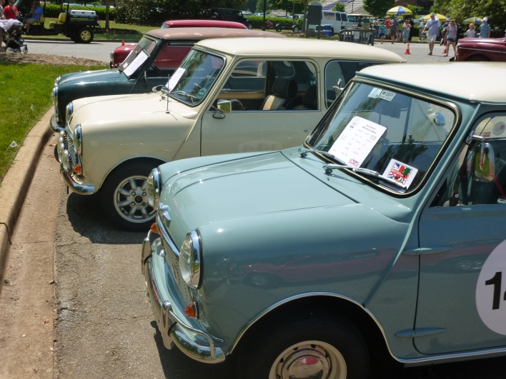

As humas we are dirven to find the awnswers. on this website we will solve the greatest questions science still cant awnswer.
I was born in germany early morning of august 16 2003. we stayed in germany 18 more months after that before we moved to england for my father work. we stayed their for 2 years we found out we were to move to the us 3 months before we were to leave. my father then purchanced a 1963 mini cooper and restored it in 3 months. when we moved to america when i was three i went into preschool and met my best frined for the first half of my life. we stayed for 7 years and moved back to germany when i was 10. we left the mini in a storage unit while we were gone. we stayed for three years. we moved back to america when i was still 12, my birthday the coensided with the first day of school, i was not happy. at this point i had lost contact with my best friend and we found out we did not have much in comman anymore. we stopped being friends. after i went into highschool i made many more friends. now im in the 11th grade making this website for a APCS-P class.
